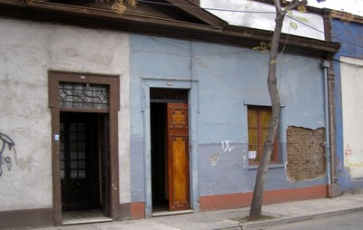

Tierra-tecnología desconocida [ET99]
Es claro que el material de construcción es tierra, pero el tipo de construcción es desconocido. El material estructural puede estar oculto, como en el caso de muros en tierra cubiertos con yeso, o no hay información disponible al respecto.

Es dificil identificar el tipo de construcción en tierra cuando los muros están cubiertos con yeso, como en este ejemplo de Caña construcción en India (People in Centre)

Edificios viejos de mampostería de baja altura en Chile son construcciones de adobe (vea las porciones de los muros expuestas); El adobe NO es considerado como una construcción en tierra (es un tipo de tecnología de construcción en mampostería) (S. Brzev)

Muchos edificios en Perú son construcciones de adobe; el adobe NO es considerado una construcción en tierra (es una tecnología de construcción de mampostería) (S. Brzev)